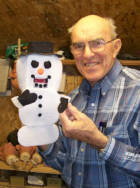

Melt down...
11/10/2010
{kind=link}

I finished this Snowman Ventrilo-ett last week, and while he is friendly and cute, and works well, I have never been fully satisfied with his over-size head. Since building this puppet, I have been working on a cute monkey Ventrilo-ett for a customer, and in the process I designed a new way to give a ventrilo-ett a smaller round head. This new special design would work perfectly for a snowman.
"But what do I do with this one? Should I sell the prototype or not?" I've pondered the question for several days now, but knowing these Ventrilo-ett puppets are likely to be around long after I'm gone, I decided this one should not be one of them. So five minutes after taking this photo I took a deep breath and completely destroyed/disassembled the puppet. I will at some point, start again to build, from the ground up, a newly designed "Frosty"!
(If you would like to possibly purchase a Snowman Ventrilo-ett final version, let me know - potential orders do provide motivation. :-)